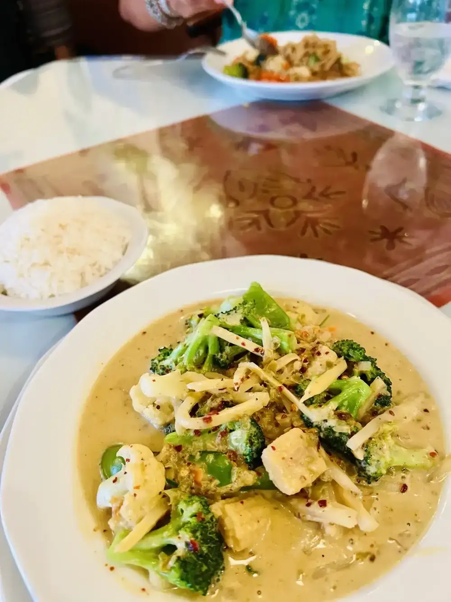
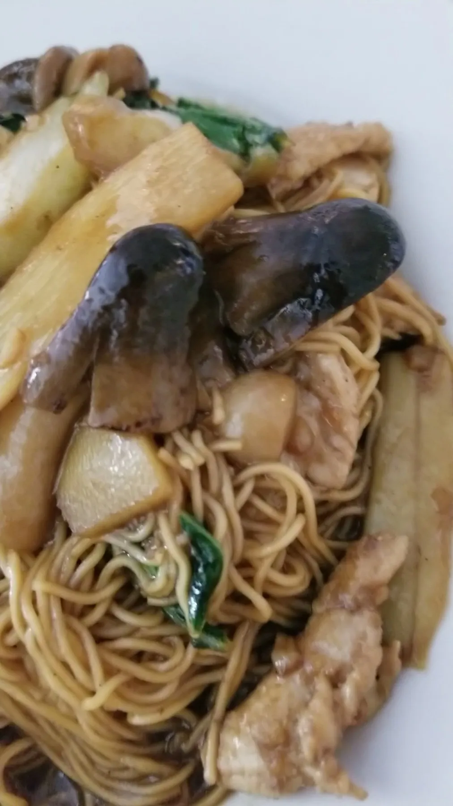
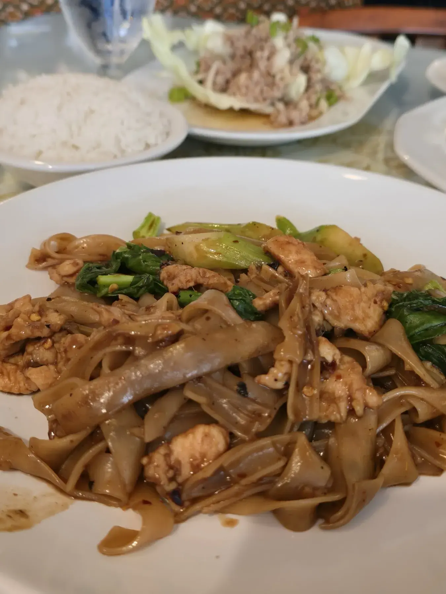
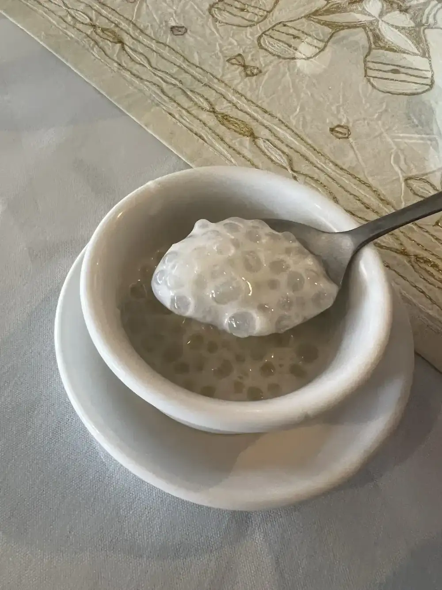
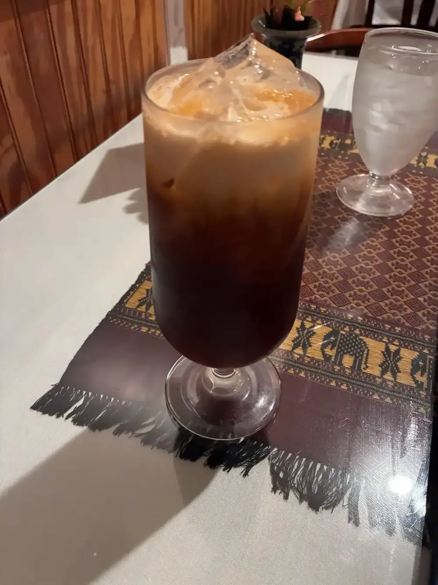
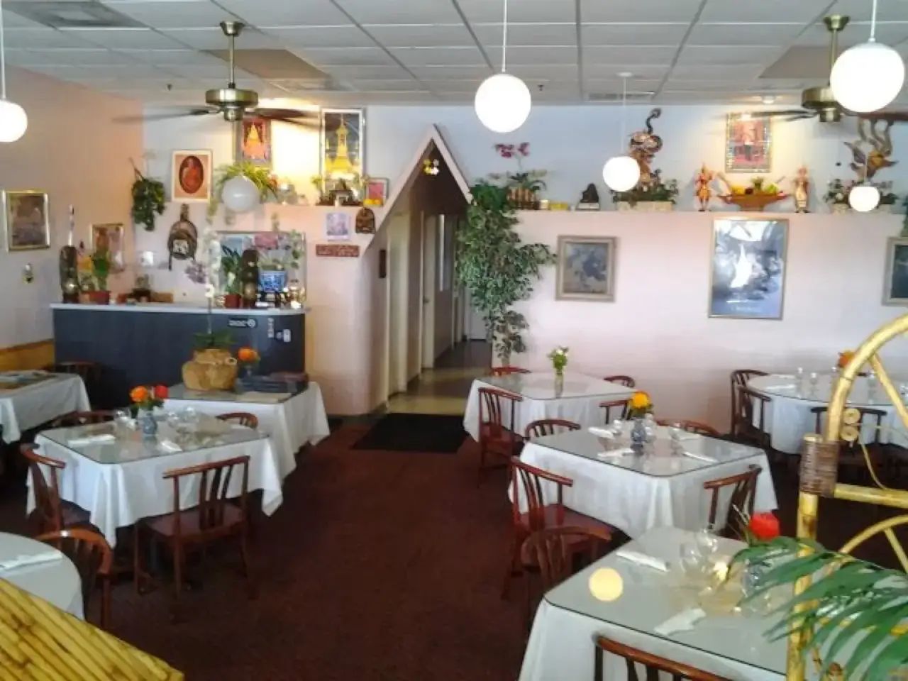
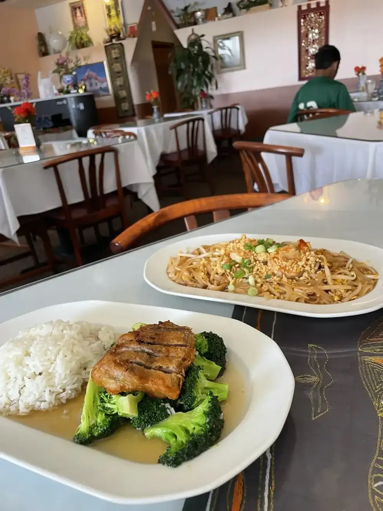

Noodles
Pad Thai and wide rice noodles with chicken, plated generously.

Thai restaurant · West Hillsborough Ave, Tampa
Fresh spring rolls, red curry, pad Thai and crispy duck, served unhurried on West Hillsborough Avenue. The owner stops by your table to check on you.

Guests praise the fresh spring rolls, the red curry with chicken and generous lunch combos. One couple who live nearby wrote that they could not believe they had missed us for so long.
Pad Thai and wide rice noodles with chicken, plated generously.

Crispy spring rolls with plum sauce, plus fresh spring rolls guests say are very different from Vietnamese ones.

Dine-in lunch specials come with spring rolls and dessert of the day.






4.6 276 Google reviews
I am not sure how we missed Cafe De Siam, as we live so close. The food and service was outstanding. There were very few people seated in the cafe, but they obviously do a very busy take out business. The fresh spring rolls were really good, and very different from Vietnamese fresh rolls. The chicken with red curry was excellent. We found the prices to be very reasonable.
I love this Thai food , and this place did not disappoint! The lunch combo was really good, and the portions were generous and satisfying. Everything tasted fresh and flavorful. I just wish they were open on Saturdays afternoon and Sundays too, I would definitely visit more often!
SO GOOD!! Amongst everyone in our party we tried 2 apps, soup, 6 entrees, and dessert and each that I tried was delicious! It was nice and quiet to eat and our server was so sweet and friendly! If you like Thai food you need to stop here!

Cafe de Siam serves authentic Thai cuisine for lunch and dinner on West Hillsborough Avenue in Tampa. The dining room is calm, with white tablecloths, carved wooden utensils on the wall and framed Thai art.
Guests call it nice and quiet, and a very busy take out kitchen too. Reviewers mention a sweet, friendly server and an owner who came to the table twice to make sure everything was right.
11242 W Hillsborough Ave, Tampa, FL 33635
Lunch and dinner Monday to Friday, dinner only on Saturday, closed Sunday. Take out is popular, so call ahead.